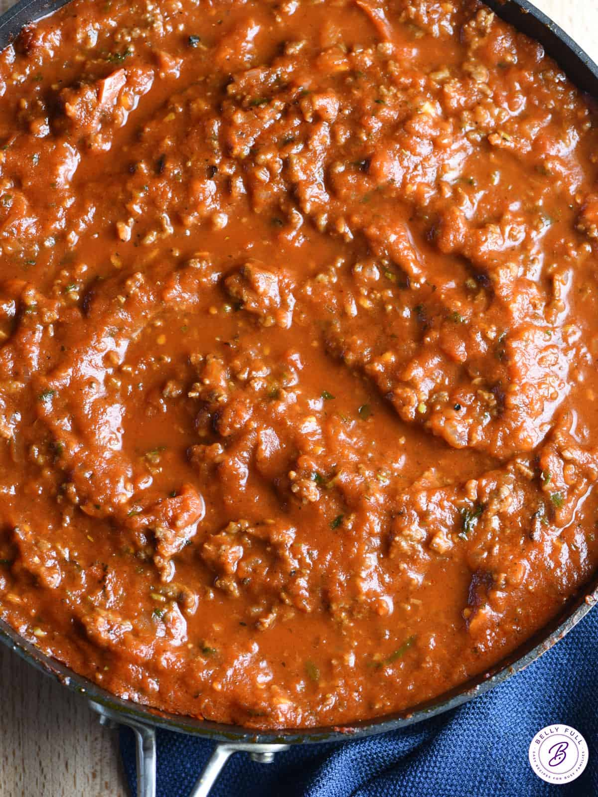

Spaghetti Suace

The Great Suace, The one true Suace, Thee Suace, sugo, or also known in todays jargon
spaghetti suace.
Ingredients
- 1 pound hot Italian sausage
- 1 pound lean ground beef
- 1 large sweet onion , diced
- 5 cloves garlic , minced
- 2 tablespoons granulated sugar (see note)
- 2 teaspoons dried Italian seasoning